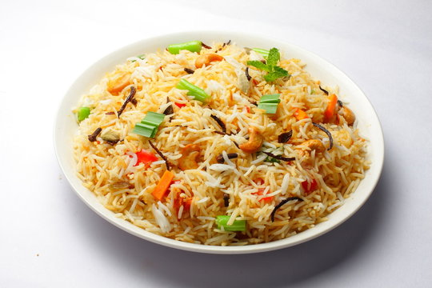

Pulao Recipe

Ingredients
- Rice
- Salt
- Vegitables
- Garam Masala
Instructions
- Take all the ingrediants as per taste required.
- Add copped vegitables in the Cooker, Add salt and spice as per taste and fry it.
- Now add the rice and water and boild the rice. And your Swadist(Tasty) Pulao is ready.